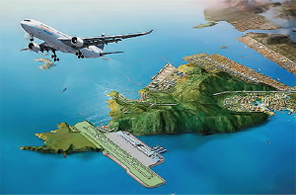
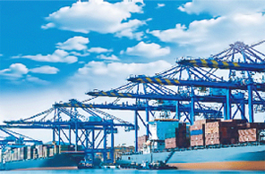

Port Logistics Industry
- Home
- Strategic Industries
- Port Logistics Industry
Overview
With an aim to become the marine capital in the northeastern era connecting the world and the future and a principal city that will create international order, Busan is exerting its utmost effort to construct port logistics infrastructure around a world-class port and state-of-the-art logistics complex.
-
 Establishment of international industrial logistics city
Establishment of international industrial logistics city -

Busan New Port
-

New airport in Gadeokdo Island
Industries
Strengthen the global competitiveness of Busan New Port
The Busan New Port around Gadeokdo Island Gangseo-gu, will be constructed by 2020 and it will strengthen the port’s global competitiveness.
- Construction of 45 container berths
- Dredging of New Port’s main sea route and the removal of Todo Island (2010–2017)
- Construction of Busan New Port’s logistics complex, including an oil tanker terminal and a large-sized repair shipyard (1995–2020)
- Construction of a one-stop joint logistics center
- Construction of a new airport on Gadeokdo Island as the 2nd national gateway, which can be operated all day around.
Establish international logistics complex around Busan New Port
Construct a world-class high-tech industry and logistics complex until 2020 on a 33 ㎢ land in the Gangseo region.
- International integrated logistics complex, high-tech industry complex, R&D complex, etc.
- Step-wise promotion of the local industrial complex, eco delta city and water-friendly zone, special R&D zone, aviation cluster, and general industrial complex
Redevelop the Busan North Port, a gateway to Eurasia
Transform about 1.53 million ㎢ land from the coastal pier to Pier 4 of Busan Port into a beautiful and world-class port equipped with multiple urban functions until 2020.
- An important venue for maritime tourism and business that is equipped with harbor, leisure, and commercial facilities
- Rearrangement of railway facilities around Busan Station (2013–2023)
- Designate it as a model district of the special maritime economy zone and promote the convergence of relevant industries
Realize the marine creative economy
Concentration of marine- and fishery-related institutions because of the movement of public and relevant institutions
- Construct an innovation cluster for marine and fishery public institutions in Dongsim Innovation District
- Establish a polar region expansion base such as the North Pole Research Center and network construction
- Build a base for the marine creative industry R&D promotion through establishing the marine bio industrial complex and marine super computing center
Build a global seafood cluster
Construction of a world-class marine and fishery space in connection with the nearby tourism resources
- Modernization of Busan Cooperative Fish Market (2015–2018)
- Making Jagalchi global fisheries a world-famous place (2013–2018)
- Construction of the Head Tower for seafood industry cluster (Sea Food Valley) (2015–2020)
- Movement of the Yeongnam regional HQ quarantine station and Animal and Plant Quarantine Agency (2010–2016)